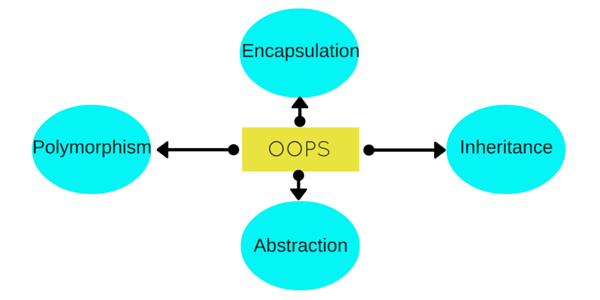

Object Oriented Programming Concepts in C++
Object Oriented programming is a programming style that is associated with the concept of Class, Objects and various other concepts revovling around these two, like Inheritance, Polymorphism, Abstraction, Encapsulation etc.
Let us try to understand a little about all these, through a simple example. Human Beings are living forms, broadly categorized into two types, Male and Female. Right? Its true. Every Human being(Male or Female) has two legs, two hands, two eyes, one nose, one heart etc. There are body parts that are common for Male and Female, but then there are some specific body parts, present in a Male which are not present in a Female, and some body parts present in Female but not in Males.
All Human Beings walk, eat, see, talk, hear etc. Now again, both Male and Female, performs some common functions, but there are some specifics to both, which is not valid for the other. For example : A Female can give birth, while a Male cannot, so this is only for the Female.
Human Anatomy is interesting, isn't it? But let's see how all this is related to C++ and OOPS. Here we will try to explain all the OOPS concepts through this example and later we will have the technical definitons for all this.
Class
Here we can take Human Being as a class. A class is a blueprint for any functional entity which defines its properties and its functions. Like Human Being, having body parts, and performing various actions.
Inheritance
Considering HumanBeing a class, which has properties like hands, legs, eyes etc, and functions like walk, talk, eat, see etc. Male and Female are also classes, but most of the properties and functions are included in HumanBeing, hence they can inherit everything from class HumanBeing using the concept of Inheritance.
Objects
My name is Abhishek, and I am an instance/object of class Male. When we say, Human Being, Male or Female, we just mean a kind, you, your friend, me we are the forms of these classes. We have a physical existence while a class is just a logical definition. We are the objects.
Abstraction
Abstraction means, showcasing only the required things to the outside world while hiding the details. Continuing our example, Human Being's can talk, walk, hear, eat, but the details are hidden from the outside world. We can take our skin as the Abstraction factor in our case, hiding the inside mechanism.
Encapsulation
This concept is a little tricky to explain with our example. Our Legs are binded to help us walk. Our hands, help us hold things. This binding of the properties to functions is called Encapsulation.
OOPS Concept Definitions
Now, let us discuss some of the main features of Object Oriented Programming which you will be using in C++(technically).
- Objects
- Classes
- Abstraction
- Encapsulation
- Inheritance
- Overloading
- Exception Handling
Objects
Objects are the basic unit of OOP. They are instances of class, which have data members and uses various member functions to perform tasks.
Class
It is similar to structures in C language. Class can also be defined as user defined data type but it also contains functions in it. So, class is basically a blueprint for object. It declare & defines what data variables the object will have and what operations can be performed on the class's object.
Abstraction
Abstraction refers to showing only the essential features of the application and hiding the details. In C++, classes provide methods to the outside world to access & use the data variables, but the variables are hidden from direct access. This can be done access specifiers.
It can also be said data binding. Encapsulation is all about binding the data variables and functions together in class.
Inheritance
Inheritance is a way to reuse once written code again and again. The class which is inherited is called base calls & the class which inherits is called derived class. So when, a derived class inherits a base class, the derived class can use all the functions which are defined in base class, hence making code reusable.
Polymorphism
It is a feature, which lets us create functions with same name but different arguments, which will perform differently. That is function with same name, functioning in different way. Or, it also allows us to redefine a function to provide its new definition. You will learn how to do this in details soon in coming lessons.
Exception Handling
Exception handling is a feature of OOP, to handle unresolved exceptions or errors produced at runtime.